Актуальність проблеми
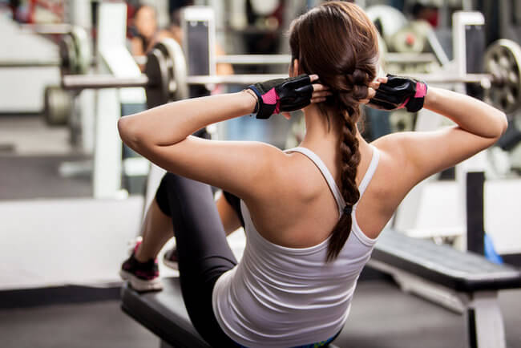Що взагалі таке програма? Це план дій, весь той комплекс заходів, який буде працювати на конкретно сформульовану мету. Чоловіки в цьому плані відрізняються набагато більшою логічністю і послідовністю. Вони знають, наскільки це важливо для спорту і досягнення результатів. Тому професіонали і досвідчені спортсмени час від часу приділяють своїй програмі досить багато уваги: постійно доповнюють її, допрацьовують і коригують.
Що роблять найчастіше дівчата? Добре, якщо вони відправляються до фітнес-інструктора і обговорюють з ним план своїх подальших занять. Або просто записуються на групові тренінги. Проте таких одиниці. Велика частина викачує з Інтернету першу-ліпшу програму або починає худнути за рекомендаціями мобільного додатка з промовистою назвою «Мінус 20 кг за місяць». Що виходить в результаті:
- травми та розтягнення через неправильне виконання вправ;
- перетренованість з-за перевищення навантажень;
- нестерпна крепатура;
- хронічна втома, обессиленность, зниження працездатності;
- погіршення самопочуття: тахікардія, скачки тиску, запаморочення;
- порушення менструального циклу.
А ось проблемні місця, жир, звисаючі валики на боках, целюліт і в’ялі м’язи — все це залишається. В результаті — прощавай, мрія, а разом з нею — тренування, здоровий спосіб життя і струнка фігура без зайвих кілограмів. І все тому, що неправильно підійшли до складання програми.
Основні складові
Щоб скласти дійсно працюючу програму тренувань, для початку дівчатам треба розібратися з її елементами, кожен з яких повинен бути ретельно продуманий.
Мета
80% всіх дівчат починають тренуватися, чітко не усвідомлюючи, навіщо їм це треба. Як правило, на початок занять у багатьох в голові каша. «Хочу займатися, тому що Катька ходить в цей зал». «Хочу бути схожою на ту фитоняшу з Instagram, у якої 100 тис. фоловерів». «Треба попу прокачати». «Пора худнути». Не можна змішувати всі ці думки і бажання в одну купу. У першу чергу потрібно точно і чітко сформулювати мету. Які вони можуть бути:
- просто схуднення, тобто зниження ваги на певну кількість кілограмів;
- корекція проблемних місць, коли зайва вага незначний (як його розрахувати, ми вже розповідали) і жирові відкладення сконцентровані, наприклад, тільки в області талії, живота і боків, а з ногами і руками проблем немає;
- ведення здорового способу життя, контроль ваги, підтримання гарної форми;
- набір маси — цю мету ставлять переважно вже досвідчені, професійні спортсменки;
- прокачування м’язового рельєфу (найчастіше для плоского живота або пружних сідниць).
Складання програми цілком і повністю залежить від початково поставленої мети. Якщо це схуднення, в ній будуть переважно кардіовправи. Якщо прокачування м’язів — силові.
Місце
Далі потрібно визначитися, де ви будете займатися вдома або в залі. І там, і там є свої плюси і мінуси. У тренажерки є одна величезна перевага — присутність професійного тренера. Він може підказати, як правильно робити ті чи інші вправи, допомогти освоїти тренажери, вказати на помилки. Крім того, такі заняття все-таки зобов’язують ходити на них регулярно: абонемент оплачений, люди чекають, соромно показати свою слабкість.
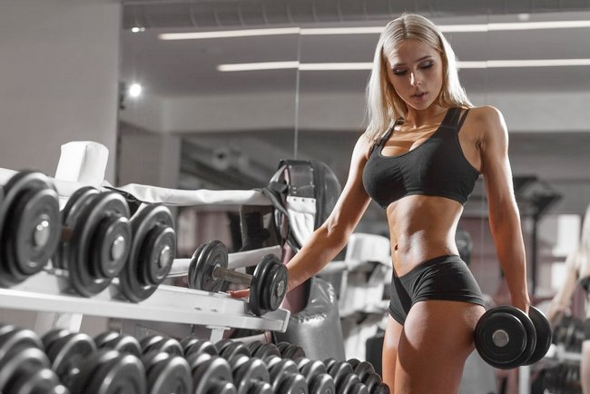Однак деяким дівчатам все-таки варто тренуватися в домашніх умовах. Особливо це стосується тих, у кого дуже багато надлишкової ваги. Їм буде некомфортно серед качків, внутрішніх комплексів стане ще більше, навантаження виявляться непомірними. Тому краще почати спокійно займатися вдома, підібравши найпростіші вправи. А вже через пару місяців, коли результати стануть помітними, можна вирушати в тренажерний зал.
Програми тренувань будинку та в залі принципово відрізняються, тому це питання потрібно вирішити ще на початковому етапі.
Комплекс вправ
- Вибір залежить від мети тренувань
Вибір залежить від мети тренувань Для схуднення основу програми складають кардионагрузки. Для прокачування певного місця упор робиться на анаеробні вправи. Однак процес жиросжигания запускається при їх грамотному поєднанні. Для домашніх занять спортивні аксесуари дівчатам, крім килимка та пари гантелей, можуть не знадобитися. А ось тренування в спортзалі — це робота з тренажерами (як силовими, так і кардіо).
- Вибір залежить від фізичної підготовки
Деякі дівчата раніше колись займалися спортом, але потім закинули. Незабаром після відновлення тренувань тіло згадає і швидко адаптується до навантажень. Тому на розкачку можна виділити тиждень (не більше), а потім шукати схеми для просунутого рівня.
Якщо фізична підготовка залишає бажати кращого (раніше не займалися спортом, багато зайвої ваги, є проблеми зі здоров’ям), починати потрібно з полегшеною програми. Наповнювати її простими вправами: нахилами, махами, обертаннями, потягуваннями, звичайними присіданнями. Через 2-3 тижні, коли тіло трохи адаптується до таких навантажень, можна поступово ускладнювати, доповнювати скручиваниями, выпрыгиваниями, випадами, обтяженнями. Освоїте їх — настане час планки, гіперекстензіі, румунської тяги і інших, більш складних вправ.
Схема
Після всього цього саме час скласти схему тренувань. Початківцям дівчатам настійно рекомендується не кидатися на абордаж і не виснажувати себе на тренуваннях щодня. У таких випадках сил вистачає тільки на тиждень, а потім дві доведеться відлежуватися від крепатури. Тим, хто вже давно не займався спортом і у кого зайвої ваги накопичилося більше 10 кг, почати можна і з 2 разів на тиждень. Наприклад, понеділок або вівторок і четвер і п’ятниця. Отзанимались за такою програмою місяць, скинули кілограми — можна переходити на класику.
Класична схема (єдина для чоловіків і дівчат) — 3 рази в тиждень. І навантаження досить, і періоди для відновлення є. Займатися частіше (4 і 5 разів у тиждень) дозволяється тільки професіоналам.
Залишилося всього нічого — визначитися з кількістю підходів і повторів для кожної вправи (в залежності від фізичної підготовки). І після цього можна складати підсумкову таблицю
Важливі нюанси
Щоб досягти кінцевої мети, дівчата повинні мати на увазі кілька важливих нюансів:
- Складання програми тренувань — занадто відповідальна справа, яка краще довірити професіоналові
- Правильна техніка виконання вправи — запорука успіху. Дивіться відео, майстер-класи, беріть окремі уроки у професіоналів.
- Заняття повинні бути регулярними. Ніякі відмовки і невідкладні справи не повинні стати перешкодою.
- Темп тренування вибирається, як і вправи, в залежності від рівня фізичної підготовленості. Не потрібно кидатися відразу з місця в галоп — нарощуйте його поступово.
- Паралельно з практикою вивчайте теорію. Дивіться нові комплекси вправ, які види тренувань для дівчат існують, як підвищити їх ефективність.
- Тіло швидко звикає до одним і тим же навантаженням і в підсумку перестає на них реагувати. Тому кожен місяць потрібно переглядати і коригувати програму. Поступово збільшувати і змінювати комплекси вправ.
- Ведіть щоденник досягнень. Схеми, техніки виконання повинні бути роздруковані і висіти на видному місці. Відзначайте кожне тренування, яка залишилася позаду.
Крім усього перерахованого вище, негласними елементами будь-якої програми тренувань є:
- сон — повноцінний, здоровий, досить тривалий (7-8 годин);
- правильне харчування — низькокалорійна (для схуднення), білкове (для нарощування м’язової маси);
- здоровий спосіб життя — відмова від куріння і алкоголю, збільшення рухової активності;
- мотивація — щоб не опускались руки, займайтеся попутно аутогенными тренуваннями, знайдіть однодумців;
- психологічний комфорт — дівчата люблять займатися самоїдством і самокопанням — від цього треба відвикати;
- здоров’я — його треба берегти, не займатися під час підвищеної температури, оперативно пролечивать всі інфекції, проходити медичні обстеження.
Якщо упустити ці деталі з виду, бажаних результатів не можна досягти.
Програма тренувань у тренажерному залі на рельєф
Для початківців
Перший місяць — два або три рази в тиждень виконується один і той же комплекс вправ.
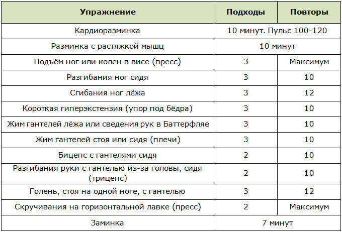У другій місяць організовується наступна схема тренувань:
- понеділок — варіант 1;
- середа — варіант 2;
- п’ятниця — варіант 1;
- понеділок — варіант 2;
- середа — варіант 1;
- п’ятниця — варіант 2 і т. д.
Варіант 1:
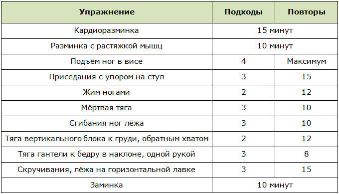Варіант 2:
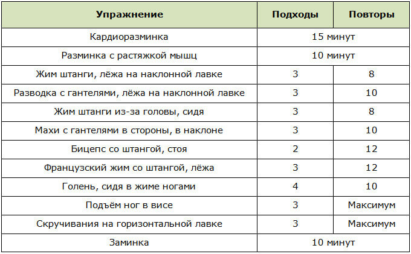Для просунутих
Заняття будуються на чергуванні 1 важкого тижня тренувань і 1 легкою.
Важкий тиждень
Варіант 1:
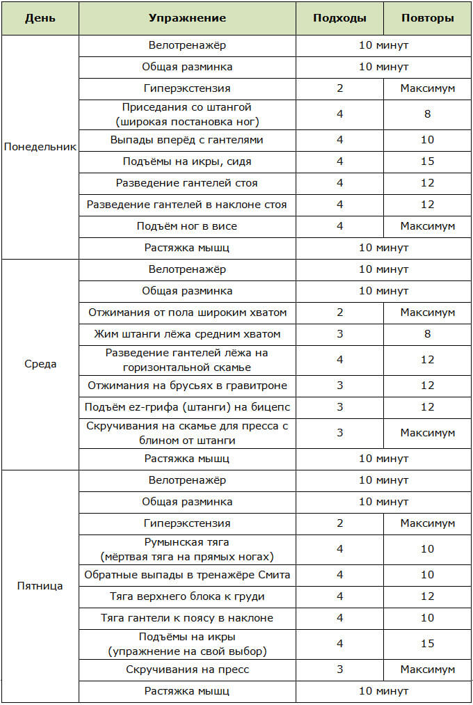Варіант 2 — для рельєфу певних частин тіла:
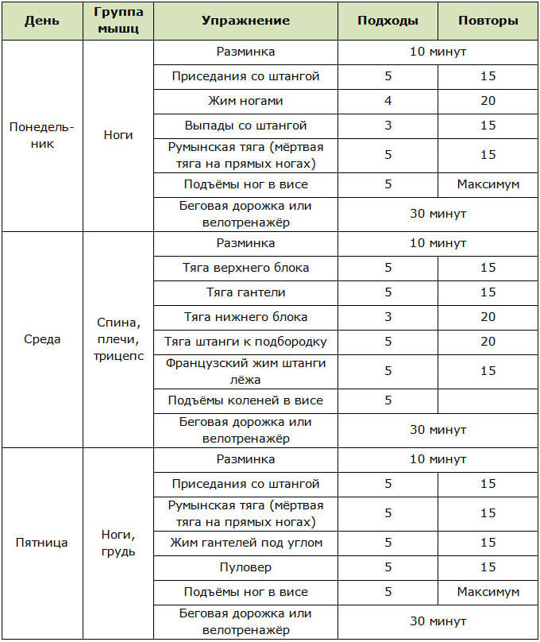Легкий тиждень
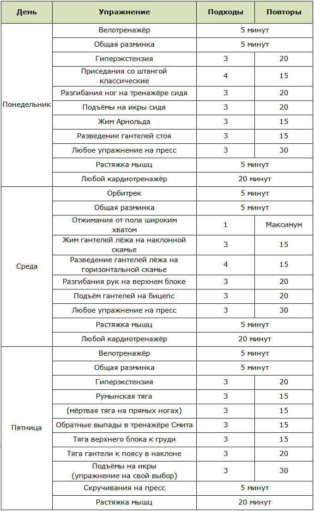Програма тренувань в залі для схуднення
Підійде і початківцям, і просунутим дівчатам. Однак першим варто зменшити кількість підходів і повторів у відповідності з рівнем своєї фізичної підготовки, а потім поступово нарощувати навантаження.
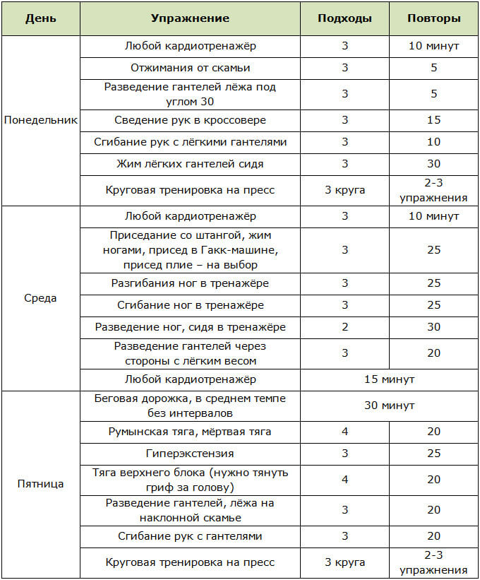Займаючись за даною схемою, можна скинути за 1 місяць до 5-6 кг при дотриманні 2 умов. По-перше, зниження добової калорійності (дієта). По-друге, правильна техніка виконання вправ.
Програма домашніх тренувань для спалювання жиру
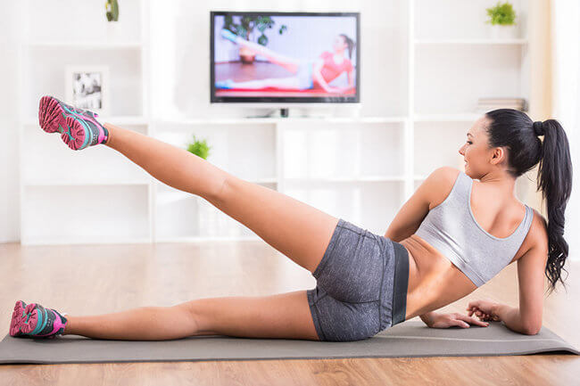Для новачків
Виконувати комплекс 3 рази в тиждень протягом тижня.
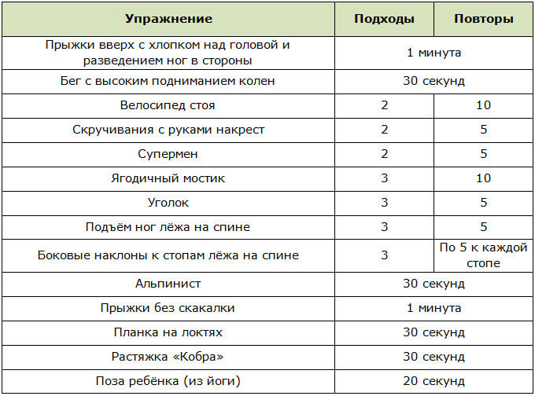Для просунутих
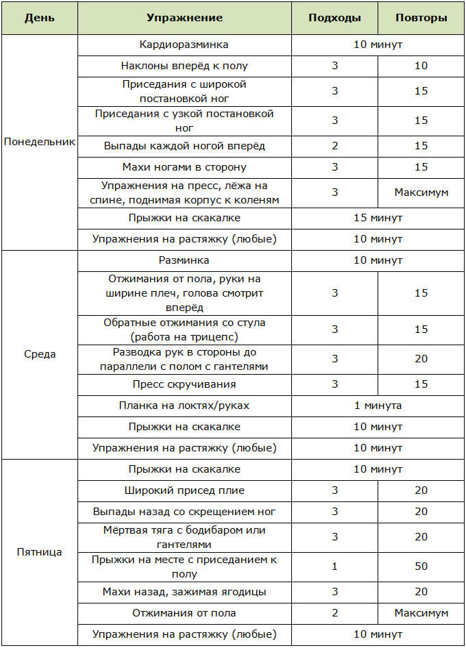Існує величезна кількість програм тренувань саме для дівчат і для домашніх занять, і для тренажерного залу. Незважаючи на це, потрібно з усією серйозністю підійти до її складання. В ній важлива кожна деталь. І, якщо є якісь сумніви, краще звернутися за допомогою до професіонала. Тільки тренер зможе врахувати всі ваші індивідуальні особливості і, орієнтуючись на кінцеву мету, дати рекомендації або навіть розробити потрібну схему.
Програма вправ в тренажерному залі для дівчат
- Розминка – початок тренування
- загальна підготовка тіла – біг, стрибки на скакалці, заняття на кардиотренажере і т. д.;
- підготовка суглобів – обертальні рухи суглобами від шиї до кісточок;
- підготовка м’язів – розтяжка м’язів до легкого болю.
- Основний комплекс вправ в тренажерному залі
- присідання зі штангою – основна вправа на сідниці, стегна і ікри;
- підтягування (альтернатива – тяга вертикального блоку) – класичне вправа для м’язів спини, передпліччя і біцепсів;
- випади – важлива вправа на ноги і стегна, виконуване з обважнювачами (гантелями);
- тяга штанги або гантелей стоячи може бути 2 видів – протяжка або станова (мертва) тяга;
- жим штанги в положенні лежачи виконується як чоловіками, так і жінками і спрямоване на розвиток біцепсів і грудних м’язів;
- класична вправа на прес, передбачає підйом прямої спини з положення лежачи (альтернатива — скручування).
- Вправи в тренажерному залі для схуднення і рельєфу
- на прес – підйоми корпусу в нахилі, ніг у висі, нахили через козла;
- на ноги – підняття ваги ногами, випади і присідання з обважнювачами;
- на руки та спину – віджимання від лавки, тяга вертикального блоку і штанги від грудей в положенні стоячи, жим і тяга гантелей лежачи в нахилі, мертва тяга з гантелями.
- Вправи для дівчат в залі для набору маси
- прес – підйом корпусу на лавці під кутом, нахили через козла;
- руки, плечі, спина – віджимання від лави, вправа «метелик», махи гантелями, протяжка в положенні стоячи;
- груди й спина – пуловер з гантелей і жим штанги лежачи, тяга вертикального і горизонтального блоків;
- ноги, стегна, сідниці – випади, присідання і нахили з обважнювачами (гантелями, штангою), підйоми ніг в упорі.
- Заминка: розтяжка в кінці тренування